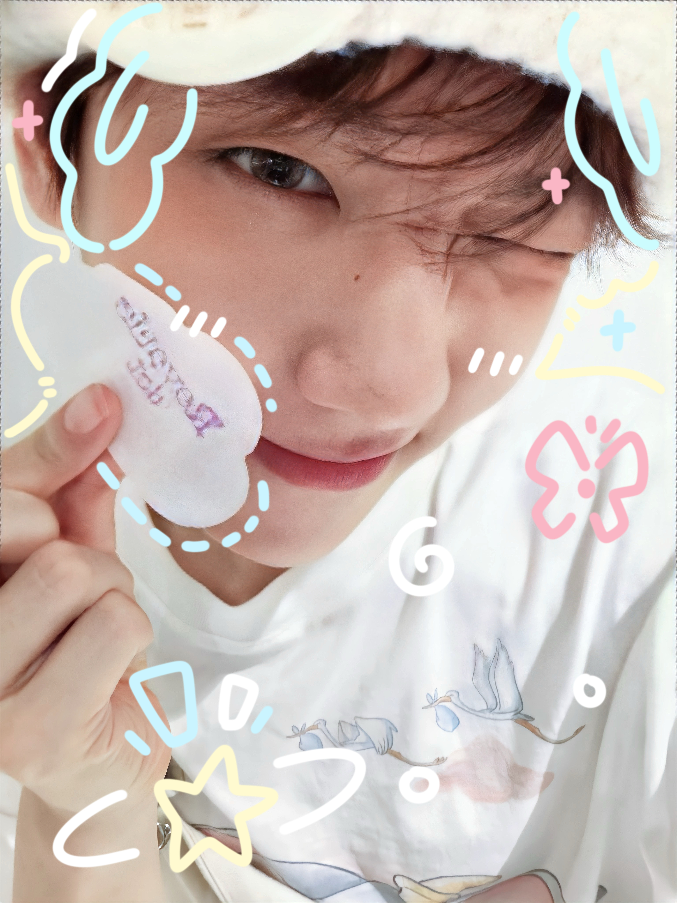

Introduction to BaekHyun
BaekHyun (born May 6, 1992) is a South Korean singer and songwriter. He is one of the main vocalists of the group EXO, and he is loved by fans all over the world for his strong and clear voice.
He debuted with EXO in 2012. Since then, the group has become one of the biggest K-pop groups. BaekHyun is also a member of the sub-unit EXO-CBX and a successful solo artist.
I admire BaekHyun since I was 12 years old and it lasts for about 11 years. He works hard, he is kind to his fans, and his music makes me happy.
Career highlights
- Member of EXO since 2012
- Member of the sub-unit EXO-CBX
- Successful solo singer
- Founder of his own company, INB100

Songs to listen to first
- "UN Village" (solo)
- "Candy" (solo)
- "Love Shot" (EXO)
Learn more on Baekhyun's Wikipedia page.